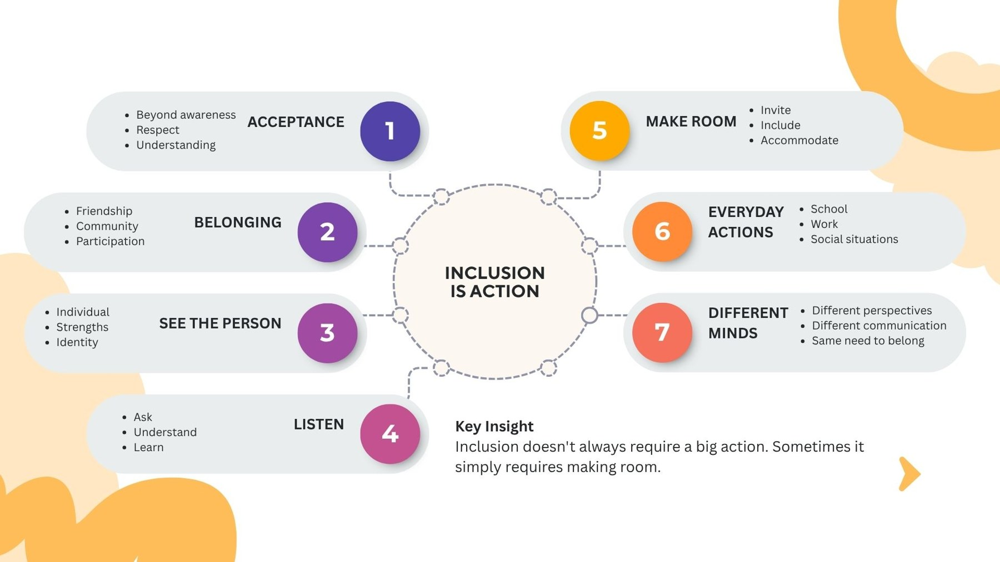
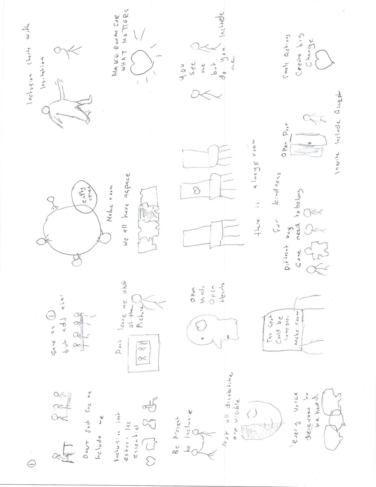
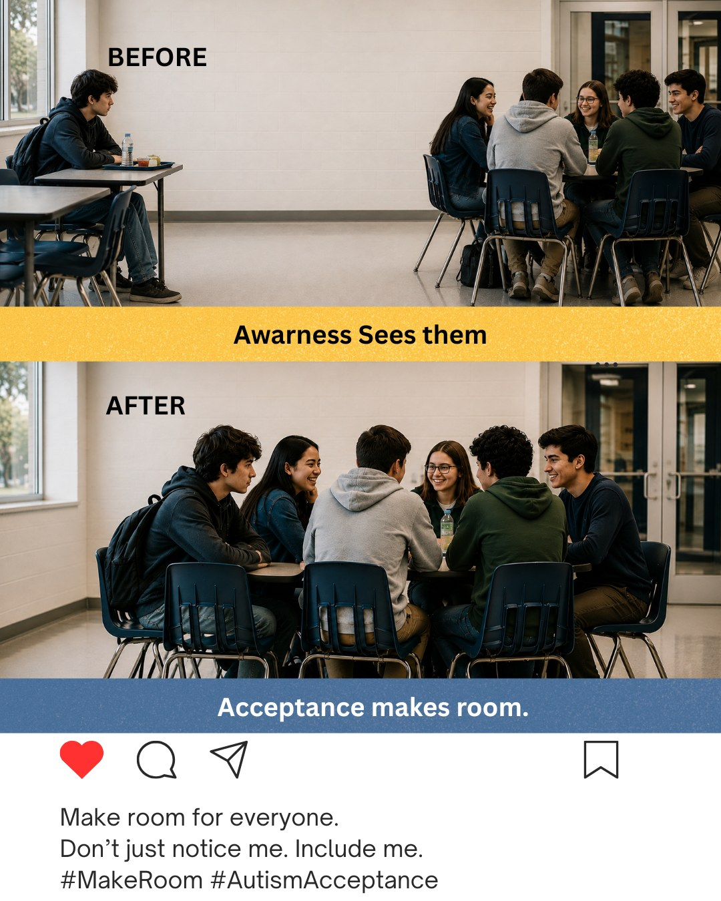
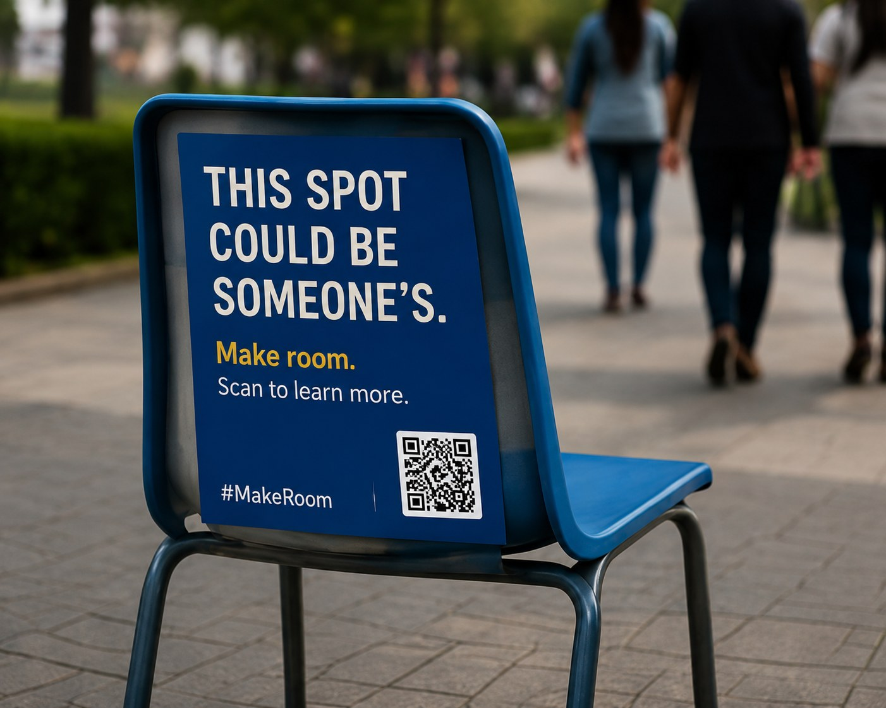

Autism Canada — #MakeRoom
Don’t just notice me. Include me.
Project Brief
#MakeRoom is an integrated PSA awareness campaign created for Autism Canada. The campaign responds to a gap between autism awareness and meaningful everyday inclusion.
The central idea is simple: recognizing autism is not enough if people are still left out at school, work, social events or in their communities. The campaign asks audiences to turn awareness into small, intentional actions that create belonging.
Awareness sees people. Acceptance includes them.

The Problem & Objective
The campaign was built around the insight that awareness of autism has increased, but awareness does not always translate into meaningful acceptance and inclusion. The objective was to move audiences from passive recognition toward active inclusion.
Think / Feel / Do
Think: Being aware isn’t enough.
Feel: Empathy and responsibility.
Do: Make intentional efforts to include neurodivergent people.
Tone & Manner
Human, respectful, inclusive, emotional and empowering — not pitying or clinical. The campaign avoids negative stereotypes and instead focuses on everyday actions people can take.
Audience Insight
The primary audience is students and young adults who regularly interact with neurodivergent people at school, university, work and in social settings. Secondary audiences include educators, employers, coworkers, parents and community members.
“I may understand what autism is, but I might not realize when someone is being left out.”
“What can I do to make this person feel included?”
Concept Development
Early development explored different ways of visualizing inclusion, belonging, listening, visibility and making space. The final direction focused on ordinary situations where a person can be physically present but not meaningfully included.


Integrated Campaign
The #MakeRoom idea was extended across outdoor, social and ambient advertising so the same message could appear in different real-life contexts while maintaining one consistent call to action.


The Campaign Idea
DON’T JUST NOTICE ME. INCLUDE ME.
The visual concept shows ordinary situations where an Autistic person may be physically present but not meaningfully included. Rather than relying on pity or negative stereotypes, the campaign focuses on one simple action: MAKE ROOM.
Whether at school, work or socially, inclusion can begin with an invitation, a conversation, an accommodation or a small change.
Outcome
#MakeRoom became a complete integrated PSA campaign built from research and audience insight, then translated into billboard, digital/social and ambient executions. The project demonstrates my ability to turn a social issue into a focused communication strategy, develop a clear campaign platform and carry one idea consistently across multiple media while keeping the tone respectful, human and action-oriented.